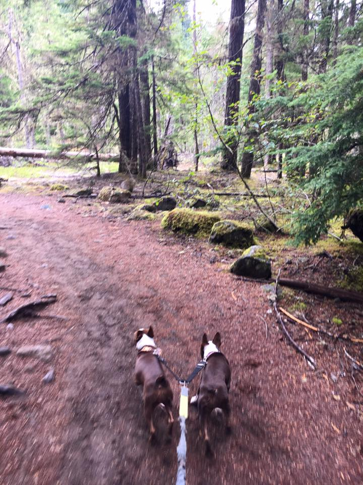

We have two little Boston Terriers named Bailey (the dark one) and Cali (the lighter one). They are half-sisters about six months apart, and since they are both younger than 3 they are full of energy! They had a blast on the trip, especially when they were running on a trail by Mount Hood!
A lot of trails were not dog friendly. Luckily, we were able to put them in special backpacks. They weren't big fans at first but got used to it.
There are a lot of pros and cons of taking your dog or other pet with you on a camping / hiking trip. Some to consider are listed below:
Overall we're glad they were with us, but one day we'd like to go to some of the parks and do the trails that we couldn't do. Many trails were just too long to have them in the backpack (we didn't want to keep them in there too long.) But how could we say no to these guys!